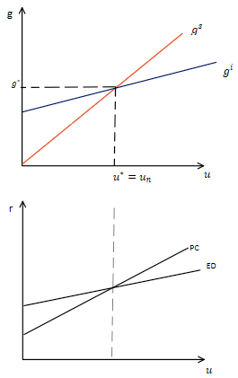
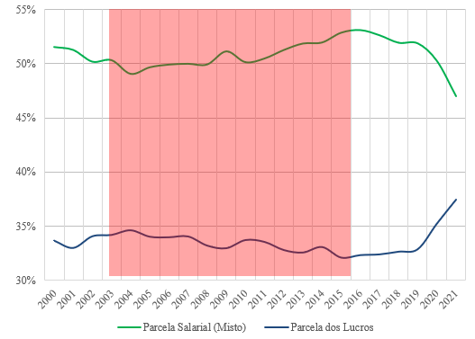

7 Exercícios
Esta seção reúne questões sobre os modelos de Harrod e Kalecki. As respostas foram mantidas ocultas para permitir que o estudante tente resolver cada questão antes de consultar a discussão correspondente. Para visualizar uma resposta, basta abrir o campo Consultar resposta ao final de cada exercício.
7.1 Questão 1 — Variáveis do modelo de Harrod
Preencha a tabela abaixo com uma breve explicação do que cada variável representa no modelo de Harrod. Além de nomeá-las, procure explicitar a intuição econômica associada ao papel que desempenham na mecânica do modelo.
| Variável | Significado e intuição econômica |
|---|---|
| Grau de utilização da capacidade instalada | |
| Relação capital-produto | |
| Taxa de crescimento efetiva | |
| Taxa de crescimento planejada | |
| Taxa de crescimento natural |
| Variável | Significado e intuição econômica |
|---|---|
| Grau de utilização da capacidade instalada | \(u = \frac{Y}{Y_K} \rightarrow\) É a razão entre o produto corrente e o produto máximo. Indica em que proporção do seu potencial a economia está operando. Na mecânica do modelo, pode ser interpretado como uma medida do nível de aquecimento da economia. |
| Relação capital-produto | \(v = \frac{K}{Y_K} \rightarrow\) Representa os coeficientes técnicos de produção e procura captar quanto as variações do estoque de capital impactam a capacidade produtiva da economia. Por isso, está associada ao mecanismo do acelerador. |
| Taxa de crescimento efetiva | \(g_y = \frac{su}{v} \rightarrow\) É a taxa de crescimento efetivamente verificada do produto. Depende da taxa de poupança, do grau de utilização efetivo e da relação capital-produto. |
| Taxa de crescimento planejada | \(g_W = \frac{s u_n}{v} \rightarrow}\) É a taxa que se manifestaria caso os estoques variassem conforme o planejamento dos produtores. Guarda semelhança metodológica com as expectativas de curto prazo de Keynes; por isso, utiliza o grau de utilização desejado em seu numerador. |
| Taxa de crescimento natural | \(g_n = g_L + g_A \rightarrow\) Representa o limite de crescimento do produto pelo lado da oferta. Na dinâmica do modelo, depende do crescimento da força de trabalho e da tecnologia. |
7.2 Questão 2 — As três taxas de crescimento em Harrod
O modelo de Harrod estabelece três taxas de crescimento. No equilíbrio, essas taxas devem se igualar para que o resultado exibido pelo modelo seja considerado estável. Na representação gráfica abaixo, a taxa de crescimento natural, associada ao crescimento populacional, encontra-se acima da taxa de equilíbrio estacionário.

a) Neste contexto, discuta brevemente quais seriam os efeitos de uma atuação pública que aqueça a economia, elevando o grau de utilização acima do nível desejado.
b) Feito isso, apresente, de acordo com o que foi discutido no curso, a visão de Harrod sobre os limites desse efeito.
a) O contexto apresentado é aquele em que o crescimento populacional (superior ao crescimento efetivo da economia) convive com uma taxa de crescimento efetiva inicialmente compatível com a taxa desejada. Isso sugere uma elevação persistente do desemprego. Em princípio, uma política pública capaz de aquecer a economia poderia combater esse resultado, elevando o grau de utilização e deslocando a trajetória do produto para cima. Entretanto, quando o grau de utilização corrente supera o desejado, novos ajustes das expectativas e das decisões dos produtores tendem a ocorrer. Esses ajustes podem afastar sucessivamente o grau efetivo do desejado e, portanto, do equilíbrio.
b) Para Harrod, à medida que o produto corrente se aproxima do limite determinado pelo crescimento natural, os empresários tenderiam a rever suas expectativas para baixo, tornando-se mais reticentes quanto à manutenção da expansão econômica. Desse modo, o ciclo de boom seria revertido em um ciclo de recessão.
7.3 Questão 3 — O mecanismo de equilíbrio do modelo kaleckiano canônico
O modelo kaleckiano canônico foi representado neste curso pelo seguinte sistema de três equações:
\[\begin{aligned} r &= \frac{\pi u}{v},\\ g_s &= s_{\pi}r,\\ g_K &= \gamma_0+\gamma_r r+\gamma_u u. \end{aligned}\]Como em todo modelo macroeconômico, no estado estacionário a taxa de crescimento da renda será compatível com uma situação em que poupança e investimento crescem à mesma taxa. Explique, em poucas palavras, qual é o mecanismo de transmissão que conduz ao equilíbrio desse modelo e por meio de qual variável ele opera.
Pelas equações do modelo, a taxa de lucro aparece tanto na equação da taxa de poupança quanto na função de investimento. Portanto, o ajuste entre poupança e investimento ocorre por meio da taxa de lucro. Entretanto, a taxa de lucro é uma função direta do grau de utilização da capacidade. Assim, quanto maior o nível de demanda efetiva — representado pelo grau de utilização —, maior será a taxa de lucro, o que eleva simultaneamente as taxas de poupança e de investimento.
O mecanismo de transmissão pode ser resumido da seguinte forma:
\[u \uparrow \quad\Longrightarrow\quad r \uparrow \quad\Longrightarrow\quad g_K \uparrow \quad\text{e}\quad g_s \uparrow. \]
A variável que permite esse ajuste é, portanto, o grau de utilização da capacidade instalada.
A mesma conclusão pode ser apresentada algebricamente. No equilíbrio, (\(g_s=g_K\)). Substituindo as funções de poupança e investimento:
\[ s\_{\pi}r=\gamma\_0+\gamma\_r r+\gamma\_u u. \]
Como (\(r=\frac{\pi u}{v}\)), temos:
\[ s\_{\pi}\frac{\pi u}{v} = \gamma\_0+\gamma\_r\frac{\pi u}{v}+\gamma\_u u. \]
A expressão evidencia que, dados os parâmetros e as variáveis exógenas do modelo, o grau de utilização é a variável endógena que permite compatibilizar as taxas de crescimento associadas à poupança e ao investimento.
A figura abaixo sintetiza o mecanismo de ajuste discutido na resposta.

7.4 Questão 4 — O paradoxo da parcimônia (Paradox of Thrift)
Na figura ao lado, temos a representação gráfica do modelo kaleckiano canônico estudado em aula. Tome-a como base para o exercício.
Suponha que um governo diagnostique o baixo crescimento dessa economia como resultado da insuficiência de poupança doméstica e procure compensar esse problema por meio de políticas públicas. O governo adota, então, uma medida bem-sucedida em aumentar a propensão média a poupar da economia. A expectativa é que, com uma taxa de poupança maior, haja mais recursos disponíveis para financiar novos investimentos.
a) Desenhe duas novas curvas sobre a figura (uma no gráfico superior e outra no inferior), representando o que muda após a política.
b) Em seguida, descreva se as expectativas do governo seriam alcançadas após o sucesso da medida adotada.

O aumento da propensão a poupar reduz o grau de utilização e desloca para baixo a curva de demanda efetiva, refletindo a menor propensão a consumir da sociedade. Como consequência, a taxa de lucro efetiva também diminui, como indicado no gráfico inferior.
Simultaneamente, o aumento da propensão a poupar faz a curva de poupança girar no sentido anti-horário. O novo equilíbrio é compatível com um grau de utilização menor e uma taxa de crescimento de equilíbrio também menor.
Intuitivamente, uma maior propensão a poupar desacelera a demanda. Sem perspectivas de venda suficientes, os empresários contraem seus investimentos. O resultado efetivo da política, portanto, é diferente daquele inicialmente esperado pelo governo. Esse é o paradoxo da parcimônia (paradox of thrift): uma tentativa de elevar a poupança pode reduzir a demanda, o investimento e, ao final, a própria taxa de crescimento da poupança e do investimento.
7.5 Questão 5 — Distribuição funcional da renda, demanda e crescimento no Brasil
O gráfico abaixo apresenta a distribuição funcional da renda no Brasil entre 2000 e 2021. No período, observa-se um contraste entre a taxa média de crescimento registrada entre 2005 e 2014 e aquela observada nos sete anos seguintes, quando passaram a ser adotadas medidas de contenção do crescimento dos ganhos reais dos salários. Ressalta-se que a taxa média de crescimento do período sombreado no gráfico foi superior à do período subsequente.

De acordo com o modelo kaleckiano canônico estudado em sala, contraste o comportamento do grau de utilização da capacidade instalada, da taxa de lucro e da taxa de crescimento nesses dois períodos. Articule a explicação com o paradoxo dos custos e analise os regimes de demanda e de crescimento da economia brasileira.
No modelo kaleckiano canônico, a contenção dos salários reduz o nível de demanda. Com uma demanda menor, a taxa de investimento também se reduz, produzindo um impacto adicional sobre o grau de utilização. Assim, mesmo que a participação dos lucros na renda aumente, o grau de utilização pode cair mais do que proporcionalmente, provocando uma redução da taxa de lucro. Com a queda do grau de utilização e da taxa de lucro, a taxa de investimento também diminui.
À luz dos dados apresentados, espera-se, portanto, que o grau de utilização, a taxa de lucro e a taxa de crescimento tenham registrado patamares menores a partir de 2015 do que aqueles observados no período anterior, qunado a parcela salarial crescia lentamente.
Esse resultado é compatível com um regime de demanda liderado pelos salários (wage-led), uma vez que uma maior participação dos salários na renda estaria positivamente relacionada ao grau de utilização. Pode-se ir além e caracterizar o período como um regime de crescimento liderado pelos salários, pois a taxa de crescimento foi superior no intervalo em que os salários apresentaram maior participação na renda.